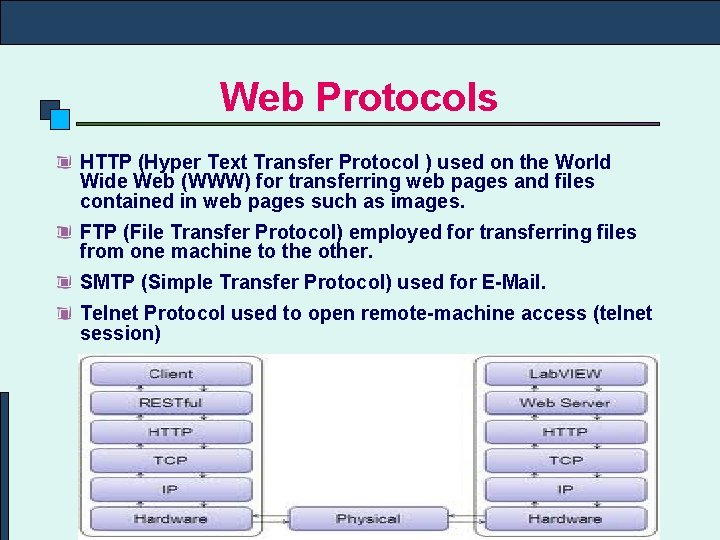

Web Protocols HTTP (Hyper Text Transfer Protocol ) used on the World Wide Web (WWW) for transferring web pages and files contained in web pages such as images. FTP (File Transfer Protocol) employed for transferring files from one machine to the other. SMTP (Simple Transfer Protocol) used for E-Mail. Telnet Protocol used to open remote-machine access (telnet session).
Web applications have a directory structure, which is fully accessible from a mapping to the application's document root (for example, /hello). The document root contains JSP files, HTML files, and static files such as image files. A WAR file (web archive file) contains a complete web application in compressed form. A special directory under the document root, WEB-INF, contains everything related to the application that is not in the public document tree of the application. No file contained in WEB-INF can be served directly to the client
WEB BROWSER A Web Browser is a WWW client that navigates through the World Wide Web and displays web pages. e. g. Internet Explorer, Mozilla firefox, Netscape Navigator etc